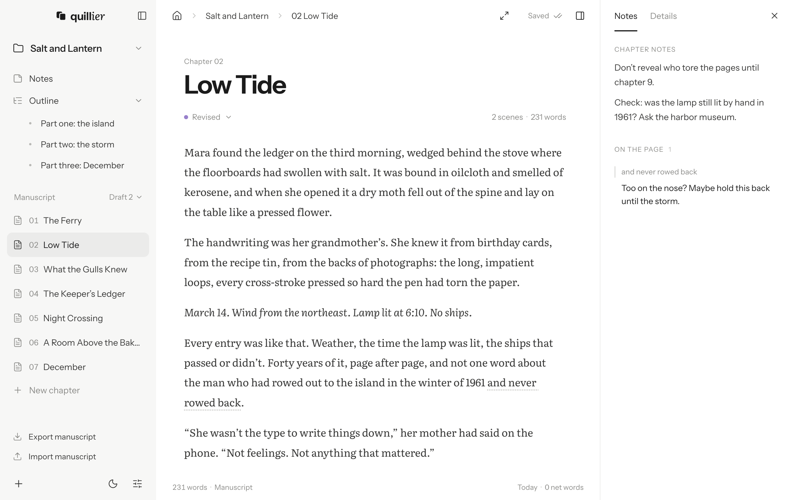

A quiet place to
write your book —
and nothing else.
Quillier is a free writing app for novels and other long work. It keeps your book on your computer in one file, keeps track of who’s in it, and stays out of your way.
Also for Intel Macs, Windows and Linux.
Opening it for the first time on Windows
If Windows says it protected your PC, click More info, then Run anyway. That happens with new apps that aren’t code-signed yet.
Opening it for the first time on Linux
Make the AppImage executable (in its file properties, or with chmod +x), then double-click it.
Your turn: click into the page and keep writing. The story bible already knows Mara, Edith (or Gran), Ingrid, Tomas, Pell and Skarra light. Type the first three letters of one and press Tab.
Your story bible, kept up to date
Give each character and place an entry, with aliases and as many notes as you like. As you write, Quillier finds them in your chapters on its own, and shows who appears where, who shares scenes and who’s gone quiet.
Tracked from your text, not tags
You never mark anything up, so pasted and imported chapters count too, and exports stay clean. “Edith”, “Gran” and “Edith Lind” are one person.
Names finish themselves
Type a capital and two letters and the rest of the name appears in gray. Tab takes it; keep typing to ignore it.
A cast list for every chapter
Each chapter and scene shows who’s in it and where it takes place, worked out from the text.
Characters, places and scenes
Each entry gets a name, aliases, a few short fields and as many notes as you want. Scene notes attach to the scenes in your chapters.
Threads you’ve dropped
When someone hasn’t appeared for a while, the dashboard says so. Every mention is a click away.
All on your computer
Tracking is plain name-matching that runs on your machine, and it’s quick even on a 100,000-word draft. No AI reads your book.
Made for a whole book
Chapters, an outline, drafts and notes sit side by side, and the finished manuscript exports in the formats agents, editors and ebook stores expect.

Chapters on the left, notes on the right. Focus mode hides everything but the page, and dark mode has a pure black setting for OLED screens.
- 01The Ferry
- 02Low Tide
- 03What the Gulls Knew
- 04The Keeper’s Ledger
- 05Night Crossing
Chapters, in order
Reorder and rename chapters in the sidebar, and mark each one not started, in progress, drafted, revised or done. Click a status to change it.
Start from a story structure
Start blank, or from one of five structures. Each beat gets an outline page explaining what happens there, ready to write over, and chapters link to the beats they cover.
Drafts you can branch
Copy the whole manuscript into a new draft before a big rewrite, and switch between drafts whenever you like.
Notes on the text
Select a passage and leave yourself a note. It shows in the side panel and never ends up in your text.
- "Gran"
- “Gran”
- --
- —
- ...
- …
- 1/2
- ½
- (c)
- ©
Punctuation that fixes itself
Quotes curl, two hyphens become an em dash and three dots an ellipsis. Fractions and symbols are offered as you type.
Export for submission
Standard manuscript format as a PDF for agents and editors, an EPUB that passes the W3C’s checker, a book-style PDF, HTML or Markdown.
One bible for a whole series
Books in a series share a story bible, and a relationship can change from one book to the next.
Your book is one file
Each book is a single .quill file, saved wherever you choose. Inside, it’s plain JSON with every chapter in Markdown, so your words are never locked in, with or without Quillier.
It saves as you type. A crash can’t leave half a file behind, and a backup copy is kept every ten minutes while you write.
{
"format": "quillier",
"title": "Salt and Lantern",
"drafts": [{
"name": "Draft 2",
"chapters": [{
"title": "Low Tide",
"status": "revised",
"content": "Mara found the ledger on the third morning, wedged behind the stove…\n\n*March 14. Wind from the northeast. Lamp lit at 6:10. No ships.*"
}, …]
}],
"bible": {
"entries": [{
"name": "Edith Lind",
"aliases": ["Edith", "Gran"]
}, …]
}
}
Nothing you write leaves your computer.
There’s no account and no analytics. The only time Quillier goes online is to check for a new version, and you can turn that off in Settings.
Free and open source
Quillier costs nothing, with no subscription and nothing to sign in to. The code is MIT-licensed and on GitHub, where you can read it, report a bug or suggest an idea.
Also for Intel Macs, Windows and Linux.